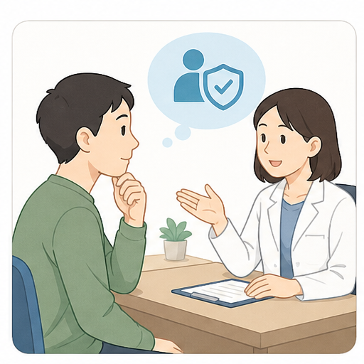
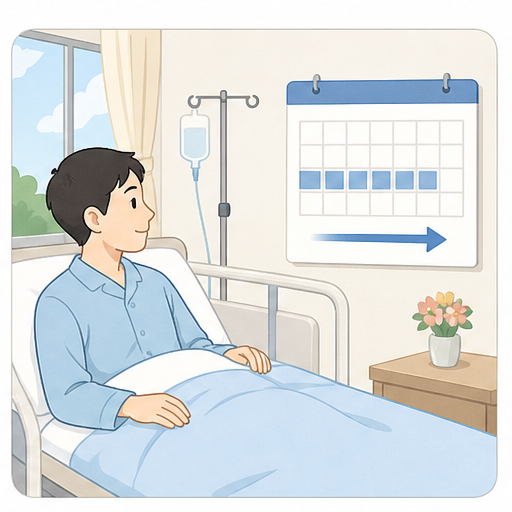
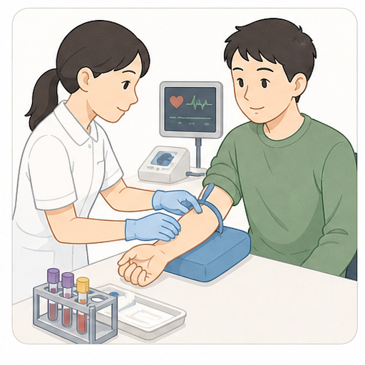
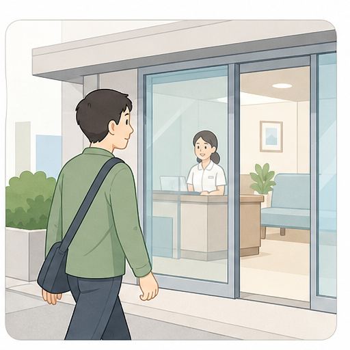

この調査について
この画面はダミーです。回答は保存されません。クロザピンを外来で始める方法について、どの条件なら前向きに考えられるかを伺います。
クロザピンについて
クロザピンは、複数の抗精神病薬で十分に良くならない統合失調症に使われる薬です。症状や生活のしづらさが改善する可能性があります。
一方で、血液検査や体調確認が必要です。発熱、胸痛、息切れ、強い便秘などがあれば早めに相談し、必要に応じて入院に切り替えます。
参加者コード
研究スタッフから渡された参加者コードを入力してください。入力されたコードに基づいて、回答していただく前提をシステム側で設定します。
デモ用コード: ACT001/ACT002 は現在の状態で回答、HYP001/HYP002 は将来TRS相当を想定して回答します。末尾001/002で有効性と副作用の提示順が変わります。本番では対応表を調査システム側で管理します。
クロザピンの情報
クロザピンの情報
クロザピン服用について
ここまでの有効性、副作用、採血・体調確認の説明を踏まえてお答えください。
クロザピンという薬を使うこと自体を前向きに考えたいですか？
選択すると次へ進みます。

入院して始める場合
主治医から、入院してクロザピンを始める方法を勧められたとします。入院中に薬の調整、採血、体調確認を行います。
入院期間は施設や状態により異なりますが、ここでは数週間程度の予定入院を想定してください。
この方法ならクロザピン服用を前向きに考えたいですか？
選択すると次へ進みます。

通院だけで始める場合
ここからは、入院せず外来でクロザピンを始める具体的な条件について伺います。最初6週間の通院頻度について、負担が大きい条件から順に伺います。
最初6週間は週3回通院
この条件でクロザピン服用を前向きに考えたいですか？
7週目以降も定期通院と採血は続きます。体調に異常があれば、必要時は入院へ切り替えます。
前向きに考えにくい理由
この通院頻度を前向きに考えにくい理由として、より近いものを選んでください。
選択すると次へ進みます。

訪問看護を加える場合
通院だけでは安全面が不安な場合に、同じ通院頻度のまま訪問看護を加える条件を伺います。
週5回確認
回答ありがとうございました
ダミー質問票の確認はここまでです。実際の調査では、この回答内容を保存して解析します。
外来導入の通院条件: 未回答
訪問看護追加: 該当なし/未回答